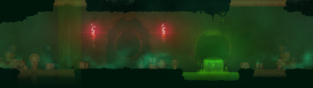
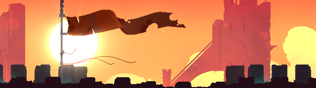
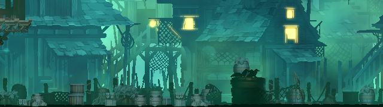
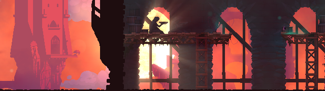
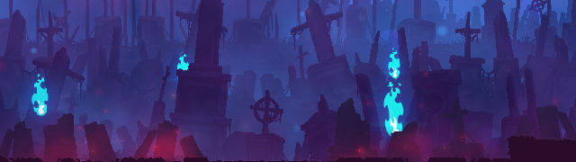
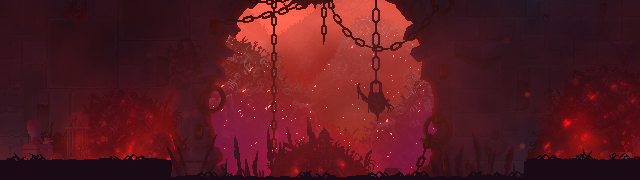
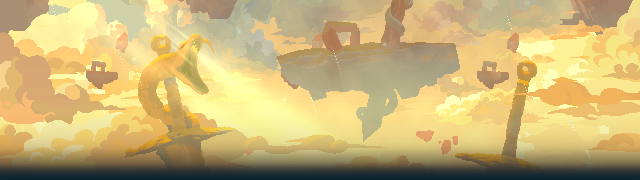
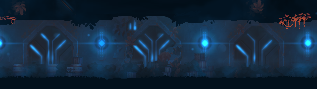
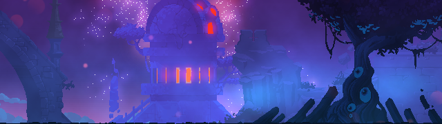

Not: Oyunda olan tüm bölgeler bunlar değildir.
【 Başlıca Bölgeler 】
Toksik Kanalizasyon  |
Surlar  |
Asma Köy  |
Saat Kulesi  |
Mezarlık  |
Kemik Odası  |
Çatlak Tapınaklar  |
Uyku Tapınağı  |
Taht Odası  |